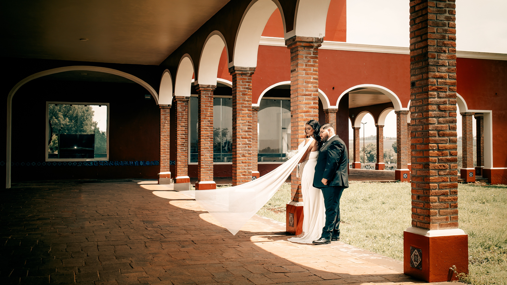
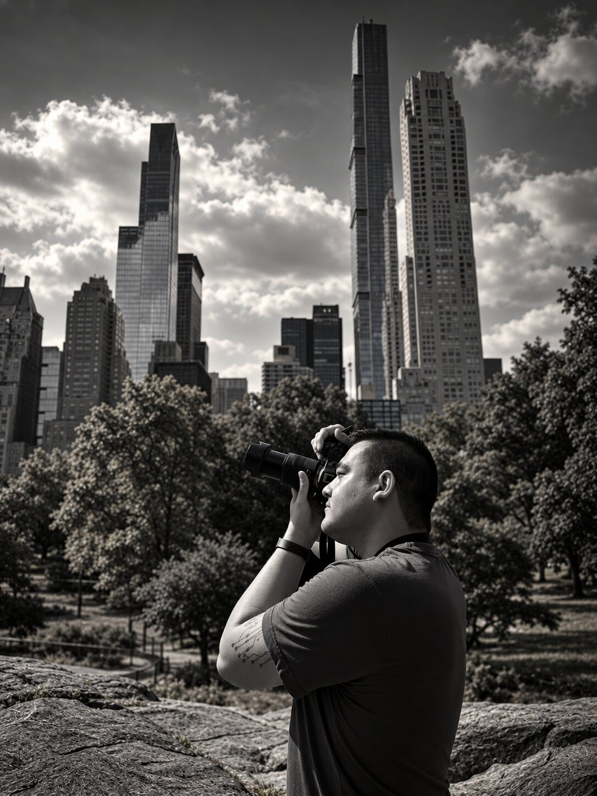

Fotógrafo · Zapopan, Jalisco
Instantes que se sienten,
recuerdos que permanecen.
Retratos, bodas y celebraciones auténticas, fotografiados con calidez.
Selección de trabajos · 2024–2026
Momentos que
merecen quedarse.
Una colección de retratos, celebraciones y observaciones íntimas. Filtra el trabajo o selecciona una imagen para verla en pantalla completa.

Un poco sobre mí
Imágenes que se sienten
como un recuerdo.
Hola, soy Juan Carlos Pérez Castellanos: fotógrafo atraído por las conexiones sinceras, las imperfecciones hermosas y la forma en que la luz transforma un espacio.
Fotografío a las personas tal como son: expresivas, espontáneas y plenamente presentes. Mi trabajo combina una mirada editorial con un instinto documental para crear imágenes cuidadas que nunca se sienten posadas.
Ya sea un retrato íntimo o una celebración llena de gente, busco los gestos, la luz y esos pequeños momentos entre escenas que hacen personal cada historia.
Trabajemos juntosFormas de trabajar juntos
Una experiencia personal,
de principio a fin.
Empecemos a conversar
Hagamos algo
que perdure.
Cuéntame un poco qué tienes en mente y escríbeme por Instagram para consultar disponibilidad.
Para consultar disponibilidad, escríbeme por Instagram.
- Ubicación
- Zona Metropolitana de Guadalajara
- Sígueme
- Instagram ↗
Tu próxima historia
empieza aquí.
Escríbeme para consultar fechas, servicios o compartir tu idea.
Escríbeme